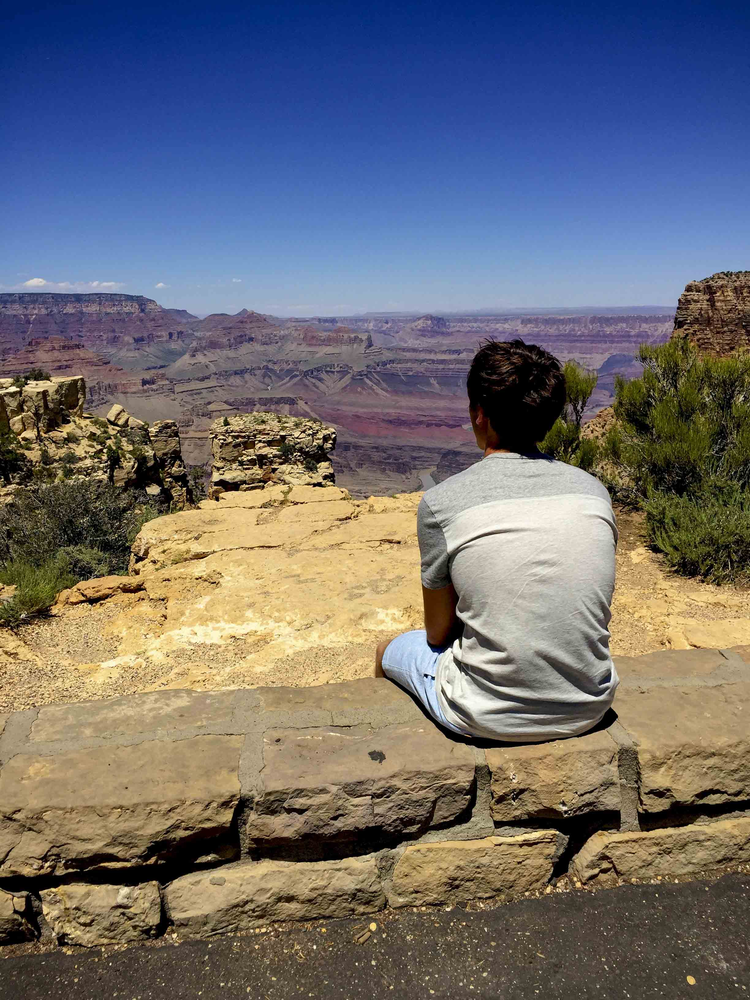

About
Back in high school and during my collegiate years, I never saw myself as the creative type. In addition, majoring in mathematics education further refined my idea that I was more of a logical thinker than a creative thinker. However, I began to dabble in Adobe Photoshop about a year and half ago. It started out with simple projects, such as selective coloring and toying around with a photo's hue and saturation. Shortly after, I began tackling new projects like poster design and swapping heads in photos for my place of employment.
Fast forward a few months and I began to learn how to utilize the all powerful Adobe Illustrator. While learning this tool was tricky in the beginning, I eventually got the hang of it through tools such as Lynda.com and YouTuber Zimri Mayfield. Through both of these learning methods, I discovered my interest in flat design (in case you couldn't tell by the color palette used on my site). From there, I began practicing flat design through some sample pieces, many of which can be found on the logos and flat design page. Through Lynda.com, I was able to explore the basic concepts of design, such as typography, color and basic skills with the Adobe Creative Cloud suite.
During my brief time as a designer, I've learned the importance of practicing your craft as much as possible. Whether it be through side projects or assigned tasks, practice helps hone your skills and explore new design concepts. Additionally, I would encourage any aspiring designer to not be afraid of taking on new challenges. It can be scary navigating the unknow waters at first, but immersing yourself into a project that challenges your design skills can be so rewarding. While I'm currently focusing on learning web design, my eventual goal is to educate students on the wide scope of topics under the design umbrella.